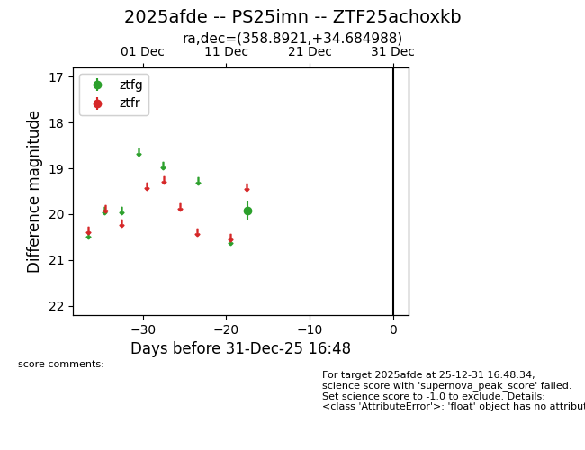
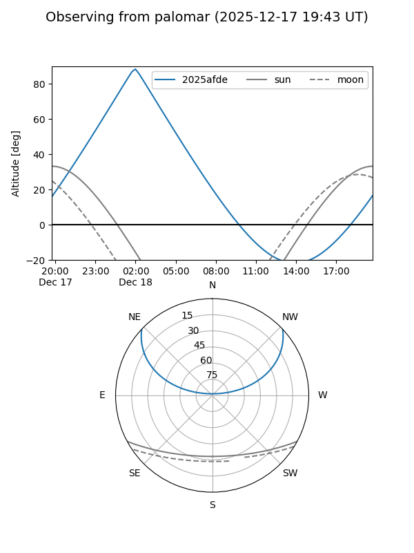

2025afde
Target 2025afde at 2025-12-31 16:59
Aliases and brokers:
FINK:
Lasair:
ALeRCE:
TNS:
YSE:
alt names
ZTF25achoxkb (ztf,fink_ztf)
2025afde (tns,yse)
PS25imn (panstarrs)
Coordinates:
equatorial (ra, dec) = 358.8921,+34.68499
equatorial (HMS+DMS) = 23:55:34.09,+34:41:05.96
galactic (l, b) = (110.0854,-26.78919)
Flags:
Photometry:
last ztfg=19.91
1 ztfg detections
Lightcurve

Visibility


Additional plots